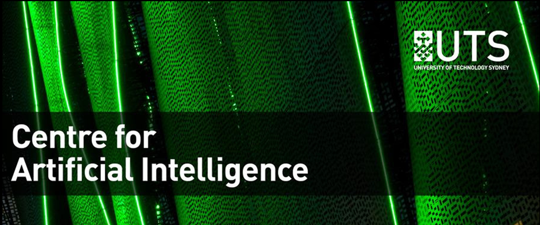
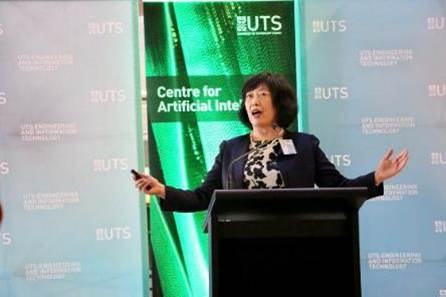

Centre for Artificial Intelligence

Centre for Artificial Intelligence (CAI) is a world leading research centre in artificial intelligence, with a vision to develop theoretical foundations and advanced algorithms for artificial intelligence and to drive significant progress in related areas like computational intelligence, business intelligence, computer vision, data science, machine learning, brain computer interface, social robotics and information systems.


News

Centre for Artificial Intelligence launches
While there is no consensus on a definition of Artificial Intelligence, it is one of the ‘hot’ topics in both theoretical and applied research, and in popular discourse about the profound impact it may have on individuals. industries and economies. The new Centre for Artificial Intelligence (UTS: CAI) will focus on the theoretical foundations and advanced technologies that will create intelligent machines with greater capacity for perception, learning and reasoning.
New UTS centre places artificial intelligence in the ‘fuzzy mainstream’

Google Faculty Research Award
Prof. Yi Yang was recently awarded by the Google Faculty Research Award in recognition of my proposal to efficient video analysis.